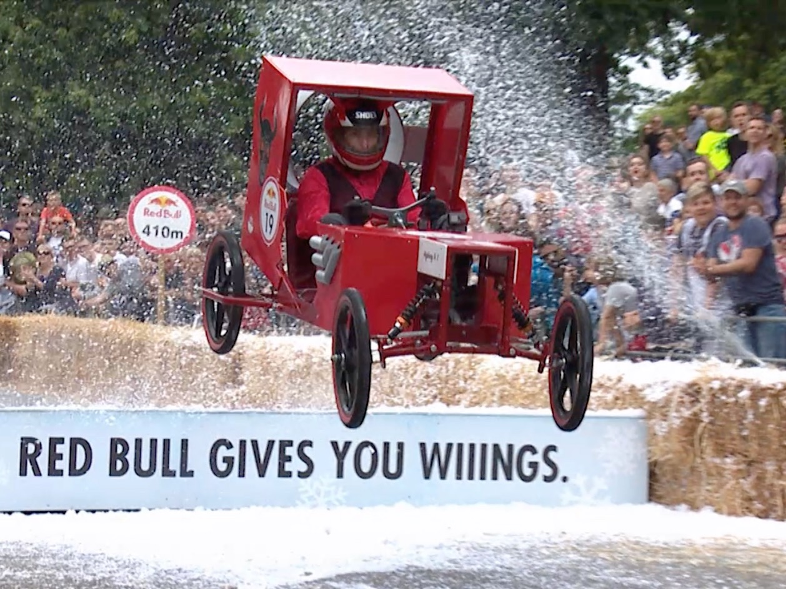
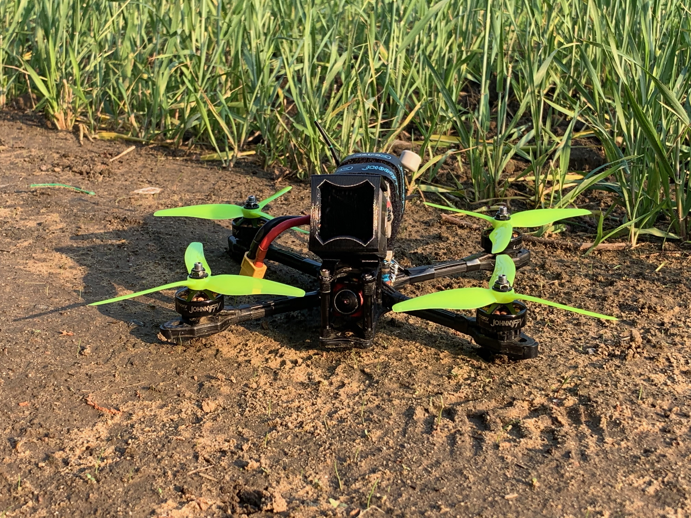
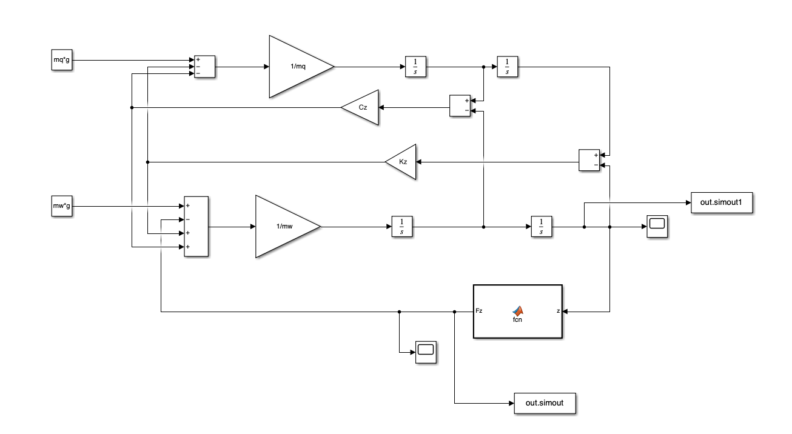
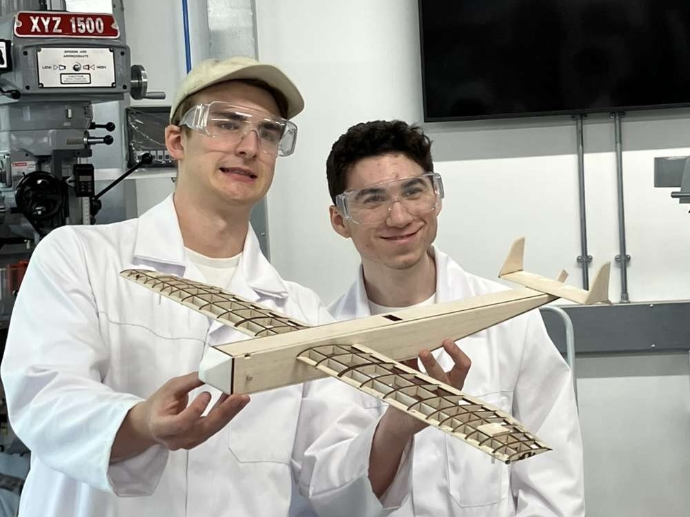
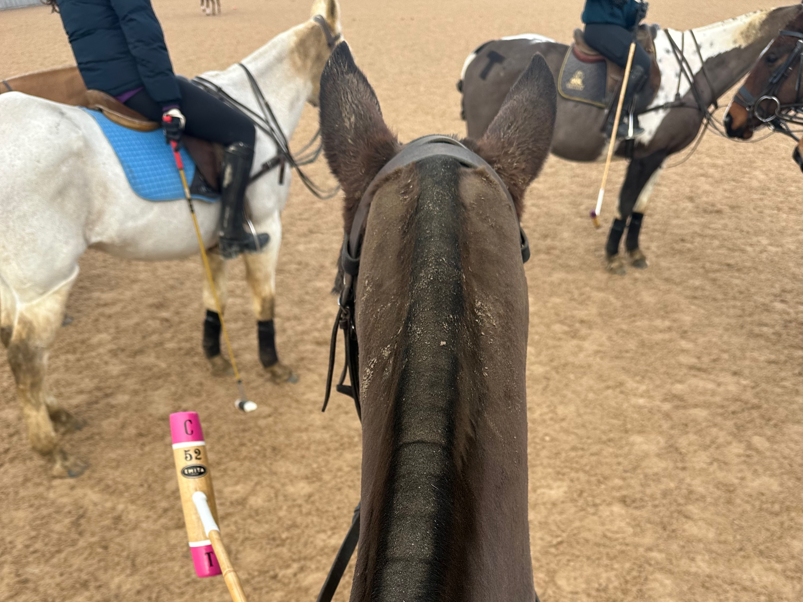
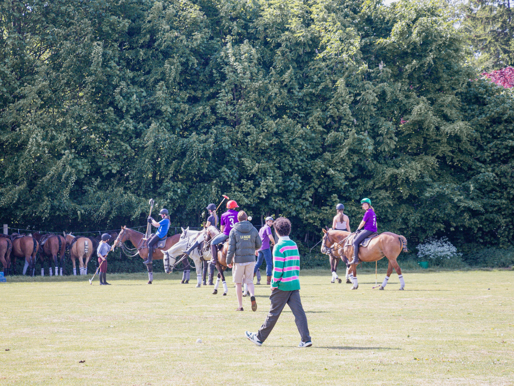
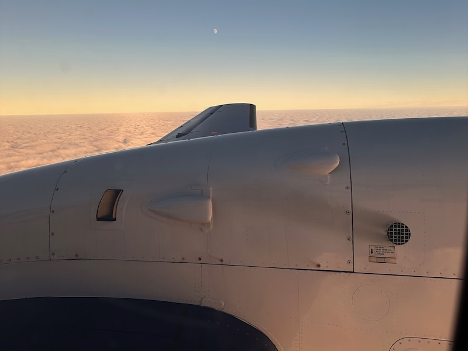

Red Bull Soap Box 2019
Picture of my Dad in the soapbox race
What started as just enjoyment of indoor RC helicopters transformed into a large scale engineering project, spanning foam board aircraft and multiple iterations of FPV drones.

My Final Year Project which first explored off-road terrains response to forces. Based on understanding this relationship, I implemented this phenomena into a tyre-terrain model.

A collection of photos from projects and activities

Picture of my Dad in the soapbox race

A photo from the build of the fly-by-wire balsa Plane

A Picture taken after a polo Lesson

Picture from polo match on grass pitch

Picture from on board the saab flight at cranfield